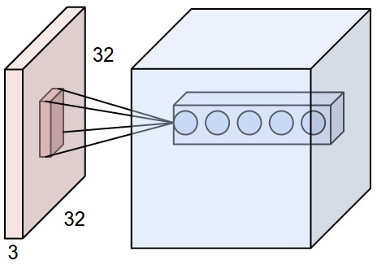
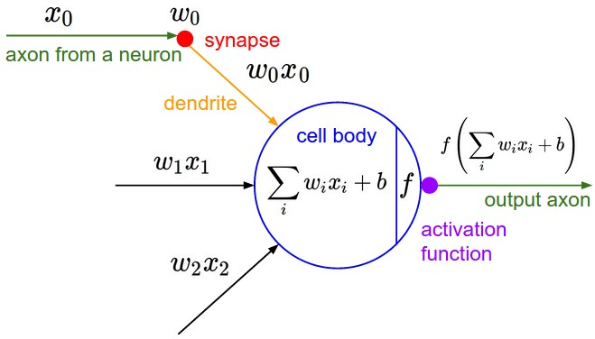
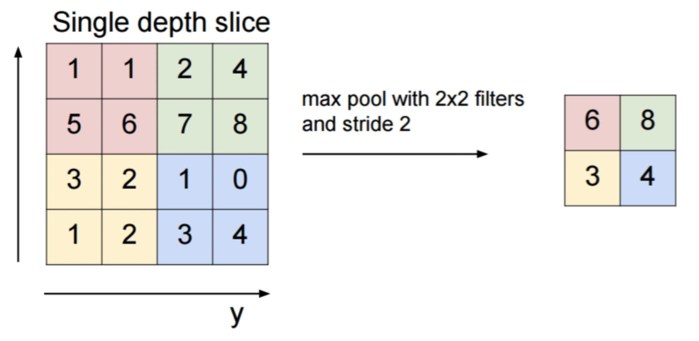

深度学习-详解CNN网络和TensorFlow实现
1. 卷积神经网络概述
卷积神经网络（Convolutional Neural Network, CNN） 也是神经网络中的一种结构，主要针对图像，音频，视频等方面应用。卷积神经网络较早的架构是LeNet ，被认为是CNN的开端，当时主要将LeNet应用于字符识别任务，如手写数字的识别等。下面是一个LeNet的网络结构：

1.1 CNN的一般结构
从上面LeNet的结构中基本可以看出，CNN的大体结构：卷积层(一个或多个，**包括ReLU**操作等)，池化或者亚采样，分类(全连接层)几个部分组成。每个部分当然有很多细节的地方。比如卷积是如何计算，卷积核的定义等；池化操作的方式，计算方式等。但CNN模型一般都会存在这几个组件。下面对一些名词进行解释，便于后面的理解：
**通道：**常用于表示图像的某种组成。一个标准数字相机拍摄的图像会有三通道 - 红、绿和蓝；你可以把它们看作是互相堆叠在一起的二维矩阵（每一个通道代表一个颜色），每个通道的像素值在 0 到 255 的范围内。
灰度图像，仅仅只有一个通道。在本篇文章中，我们仅考虑灰度图像，这样我们就只有一个二维的矩阵来表示图像。矩阵中各个像素的值在 0 到 255 的范围内——零表示黑色，255 表示白色。
2.卷积层
2.1 卷积的数学定义
卷积神经网络中很重要的就是卷积的概念，卷积本身是在泛函分析中的定义：卷积、旋积或摺积(Convolution)是通过两个函数f 和g 生成第三个函数的一种数学算子，表征函数f 与g经过翻转和平移的重叠部分的面积。
从定义可以看出，卷积是一种运算，因为从定义上得出的面积，基本可以看出可以通过积分来定义，这个积分就定义 了一个新的函数,如下，就不用数学公式来详细展开了，具体可以参考维基百科上的定义（如：连续定义(积分)和离散定义(求和)）。
2.2 卷积的物理意义
从卷积的定义上可以看出，卷积主要是进行反转，平移，加权求和(积分)；从定义上比较抽象，不易理解，从物理意义上进行解释便于理解，那么卷积计算的意义是什么呢？
- 平滑：卷积运算是一种线性运算，比如在图像中，将某个像素点用周围所有点进行加权求和值代替。
- 消除"噪声"：在1中的平滑和噪声消除相似，因为卷积本身就是进行加权求和，因此卷积后的值会过滤部分"噪声"。
- 空间显著性：卷积是对某一部分值进行操作，体现了空间的特性，能对空间中的特征进行增强。
- 空间变换：卷积在空间上有显著性，但是卷积本身是反转平移等操作，相当于进行了空间变换；比如某个物体，无论在空间的某个位置，卷积操作都可以将其特征抽取出来。
卷积在其他领域也有很多应用，比如频谱分析，信号处理等；也有很多其他物理意义，在这儿只是列举了部分具有代表性的物理意义。
2.3 卷积的实现
首先看下卷积的计算过程，根据上面卷积的定义，来展示下卷积的计算过程是怎么样的，假设现在有一个\(3 *4\)的矩阵\(f\)和\(3*3\)的矩\(g\)，卷积核一般为奇数：

最后得到了一个卷积后的矩阵：
python的numpy和sicpy中就实现了卷积运算，可以直接进行使用：
import numpy as np
from scipy.signal import convolve2d
x = np.random.randint(0, 10, (4, 4))
g = np.array([[1, 0, -1], [0, 1, 0], [1, 0, -1]])
h1 = np.convolve(x.ravel(), g.ravel(), mode='full')
print(h1)
h_same = convolve2d(x, g, mode='same')
print(h_same)
numpy中的convolve只是支持1-dim的数据。但scipy中实现了2-dim的卷积运算。在这两个模块中卷积运算都有三种模式，即mode 选项：{'full', 'valid', 'same'}，不同的模式得到卷积预算的结果不同，主要是对边缘的处理方式不同。
2.4 CNN中的卷积
在上面我们使用的卷积运算中使用的卷积核(\(g\))，经过了翻转再进行计算。在CNN网络中的卷积和上面的卷积基本相似，但是使用的算子(相关核-Kernel ，也称为相关算子)不会进行翻转（当然也可以翻转，翻转的算子叫卷积核或卷积算子），当然也可以使用卷积核。下面是其他文献中的说法：
对图像大矩阵和滤波小矩阵对应位置元素相乘再求和的操作叫卷积(
Convolution)或协相关(Correlation).协相关(Correlation)和卷积(Convolution)很类似, 两者唯一的差别就是卷积在计算前需要翻转卷积核, 而协相关则不需要翻转.
相关核或卷积核一般都为一个方正，如3*3的矩阵，5*5的矩阵，方正中每个元素都可以看成一个权重系数；使用卷积进行计算时，需要将卷积核的中心放置在要计算的像素上，一次计算核中每个元素和其覆盖的图像像素值的乘积并求和，得到的结构就是该位置的新像素值。下面主要演示了相关核（相关算子）的卷积计算过程：

步骤：
(1).滑动核，使得核中心位置位于要计算的像素点上
(2).重叠的位置进行对于元素乘积并求和，得到该像素点新的像素值
(3).重复上面的过程，输出整个图的所有新的像素值

上面的步骤也可类似看作：隐藏层中的神经元 具有一个固定大小的感受视野去感受上一层的部分特征。在全连接神经网络中，隐藏层中的神经元的感受视野足够大乃至可以看到上一层的所有特征。 而在CNN（卷积神经网络）中，隐藏层中的神经元的感受视野比较小，只能看到上一次的部分特征，上一层的其他特征可以通过平移感受视野来得到同一层的其他神经元，由同一层其他神经元来看。
2.5 常用的卷积核
- 低通滤波器（常用于计算模糊后的效果）
-
高斯滤波器（常用于计算高斯模糊后的效果） 高斯模糊的卷积核也是一个正方形的滤波核，其中每个元素通过以下公式计算得出：
\[G(x,y)=\frac{1}{2πσ^{2}}·e^{\frac{x^{2}+y^{2}}{2σ^{2}}}\]该公式中\(\sigma\)是标准方差（一般取值为1），\(x\)和\(y\)分别对应了当前位置到卷积核中心的整数距离。通过这个公式，就可以计算出高斯核中每个位置对应的值。为了保证滤波后的图像不会变暗，需要对高斯核中的权重进行归一化。 -
边缘检测（常用于计算图像边缘或者说梯度值） ：
2.6 TensorFlow中卷积的实现
在TensorFlow中实现了卷积运算，本文中主要针对2维卷积运算说明，conv2d和depthwise_conv2d这两个实现，首先对conv2d进行说明。
2.6.1 conv2d
tf.nn.conv2d(input, filter, strides, padding, use_cudnn_on_gpu=None, name=None) ，下面对参数进行说明：
input：需要卷积运算的tensor，输入的shape为[batch_size, height, width, n_channels]，即矩阵意义[批次的样本数，行，列，通道数]，一般都是用于图片。这是一个4维的Tensor，要求的类型为float32或float64。
filter：相当于CNN中的卷积核，它要求是一个Tensor，具有[filter_height, filter_width, in_channels, out_channels这样的shape，具体含义是[卷积核的高度，卷积核的宽度，图像通道数，卷积核个数]，要求类型与参数input相同，有一个地方需要注意，第三维in_channels，就是参数input的第四维
strides：卷积时在图像每一维的步长，这是一个一维的向量，长度4
padding：string类型的量，只能是SAME, VALID其中之一，这个值决定了不同的卷积方式，这个和scipy和numpy中的mode类似。
use_cudnn_on_gpu：是否使用cudnn加速，默认为true 。
卷积运算后会输出一个Tensor，也就CNN中的feature map。
下面是在tensorflow中卷积运算的示例：
import tensorflow as tf
import numpy as np
x = tf.Variable(initial_value=tf.random_normal(shape=[100, 28, 28, 3]), dtype=tf.float32)
filter_kernel = tf.constant(np.random.randint(0, 2, [3, 3, 3, 5]), dtype=tf.float32)
conv_tensor_same = tf.nn.conv2d(x, filter_kernel, [1, 1, 1, 1], padding='SAME')
conv_tensor_valid = tf.nn.conv2d(x, filter_kernel, [1, 1, 1, 1], padding='VALID')
print(conv_tensor_same) # 输出和输入的矩阵大小一致,通道数为卷积核的输出通道数,batch_size不变
print(conv_tensor_valid) # 输出和输入的矩阵大小不一致,通道数为卷积核的输出通道数,batch_size不变
# ----------------- output -------------------
Tensor("Conv2D:0", shape=(100, 28, 28, 5), dtype=float32)
Tensor("Conv2D_1:0", shape=(100, 26, 26, 5), dtype=float32)
上面的例子中输入为3通道的28*28的100张图片，经过卷积核（3*3的卷积核，输出5通道）后，得到了每张图（100张）都有5张28*28或26*26的feature map。当pading参数不同时返回feature map的大小不同，下面动态展示：
-
padding=’SAME’时，TensorFlow会自动对原图像进行补零,从而使输入输出的图像的高度和宽度计算如下：
out_height = ceil(float(in_height) / float(strides[1]))
out_width = ceil(float(in_width) / float(strides[2]))
padding='VAILD'时，则会缩小原图像的大小 ，缩小后的图像即为feature map，其size为(W – F + 1) / S，结果向上取整，其中W为输入矩阵的width，F为卷积核的大小，S为步长，按输出图像的长度和宽度分阶后：
out_height = ceil(float(in_height - filter_height + 1) / float(strides[1]))
out_width = ceil(float(in_width - filter_width + 1) / float(strides[2]))

上面的两个公式也可以通过一个公式代替：
padding size，padding size的计算方式\(P=\frac {F-1} 2\)，当padding为vaild时\(P=0\)，\(S\)为在当前维度下移动的步长。
2.6.2 depthwise_conv2d
depthwise_conv2d(input, filter, strides, padding, rate=None, name=None, data_format=None)，参数说明如下：
- input 的数据维度
[batch ,in_height,in_wight,in_channels] - 卷积核的维度是
[filter_height,filter_heught,in_channel,channel_multiplierl] - 卷积核
filter和独立的应用在in_channels的每一个通道上(从通道 1 到通道channel_multiplier) - 然后将所有结果进行汇总,输出通道的总数是，
in_channel * channel_multiplier
input_data = tf.Variable(np.random.rand(10, 9, 9, 3), dtype=np.float32)
filter_data = tf.Variable(np.random.rand(2, 2, 3, 2), dtype=np.float32)
y = tf.nn.depthwise_conv2d(input_data, filter_data, strides=[1, 1, 1, 1], padding='SAME')
print('tf.nn.depthwise_conv2d : ', y)
# -------------- output --------------
# tf.nn.depthwise_conv2d : Tensor("depthwise:0", shape=(10, 9, 9, 6), dtype=float32)
其效果类似于多个卷积核运算都是张量的一个维度增加，不同之处在于通道数的增加是卷积核在不同通道上运算的结果，而多个卷积核运算（conv2d运算操作）相当于是batch的数量增加 。
2.7 CNN中的Feature Map
卷积的主要作用就是生成feature map，从图像中提取特征图，特征图主要是根据卷积核来生成，不同的卷积核生成不同的特征图。
前面说了卷积的物理意义，卷积在空间上对特征进行了提取，同时也是对局部视野的感受，卷积的大小相当于感受野的大小，这个是其他网络无法达到的。因此feature map是CNN中非常重要的一环。
2.7.1 feature map的大小
因为feature map是由卷积生成的，一个卷积核生成一个feature map,因此卷积层输出的大小就是feature map的大小，具体大小的计算方式主要是基于上层输入的大小，feature map大小和步长有关系。具体大小的计算公式在2.6中已经进行了说明。
2.7.2 feature map的数量
feature map的数量和卷积核的数量相关，在tensorflow中的卷积运算时，比如输入的input为1*32*32*3（3为通道数，也可以理解为feature map数），卷积核为5*5*3*5的大小，其中最后一个5就是卷积核数量，即输出的通道数，生成的feature map数量。下面通过一个动态图来展示整个过程：
2.7.3 feature map的计算
其实Feature Map的计算过程就是卷积计算的过程，下图中是对其进行了可视化，输入的为1*32*32*3的图像，卷积核为3*3*3*5的大小，对输入的局部（一个局部）进行计算，如下的右图所示。其中\(w_i\)就是其中一个卷积核的的某个值，这个值会通过模型训练进行训练。

|
2.8 卷积的训练参数
在卷积层的训练主要是对卷积核的训练，上面我们已经明确了在卷积运算时是怎样计算的，下面就看在训练过程中的参数问题，首先就必须了解参数的大小。
如果是使用全连接网络，再输入一个100*100的图像，假设有1000个隐藏神经元，那么就会有100*100*1000个连接，\(10^7\)个参数需要进行训练，如果我们使用卷积的方式，采用10*10的卷积，那么参数就是100*100*10*10，数量级减少了一个，但是这个数量级的参数还是很多。有什么其他办法么？那就是权值共享。
2.8.1 权值共享
我们从卷积计算过程就知道，每次会从图像的区域取和卷积核同样大小的区域来进行运算。也就是每个**神经元（feature map中的元素）**会连接一个10*10的区域，这样就会有100个参数，如果每个神经元都使用同一组参数，那么参数还是100个。因此这样就是权值共享。
在进行通俗的理解：在一张图片上，通过一个卷积核进行扫描所有点时，使用的相同的卷积核，卷积核的值就是权重。这样权重就是共享的。扫描整个图片的参数也就只是卷积核的大小。
2.8.2 多通道多卷积核
当为多通道进行多个卷积计算时，每个通道上面对应一个卷积核。假设有一个四通道的图片，利用两个卷积核进行运算，最后生成两通道，即得到两个feature map。如下所示：

四个通道上每个通道对应一个卷积核，先将\(w_2\)忽略，只看\(w_1\)，那么在\(w_1\)的某位置（i,j）处的值，是由四个通道上（i,j）处的卷积结果相加然后再取激活函数值得到的。 所以最后得到两个feature map， 即输出层的卷积核核个数为 feature map 的个数。其计算公式：

3.非线性操作（ReLU）
一般再卷积后都会有一个非线性的操作，我们前面也提到过卷积其实是线性的操作，而对于一般的分类来说，线程分类不能满足，因此需要再卷积中加入非线性。这样才会进行更好的分类。因此这一步也是非常关键的。
在使用非线性操作函数时，ReLU，sigmoid，tanh等都是可以的，但是根据历史经验，大部分情况下使用ReLU的效果会更好。
4.池化层（Pooling Layer）
Pooling也称为下采样或亚采样，主要对上面过程输出的特征图进行采样，降低特征图的维度，但是可以保持部分重要的信息；池化规模一般为2×2 （也可以使用其他的大小），在feature map上不重合的平移*2×2大小区域，并进行采用；空间池化的主要方式有以下几种。

4.1.1 池化方法
- 最大化（
max pooling）：取4个点的最大值 - 平均化（
average pooling）：取4个点的平均值 - 高斯池化（
gauss pooling）：类似高斯模糊，这个不太常用 - 训练池化（
train pooling）：也可以根据四个值训练一个函数\(f\)得到一个值，不常用
由于特征图不一定是2的倍数，因此池化操作在边缘处理上也有两种方式：
- 忽略边缘：多出来的边缘直接去掉
- 保留边缘：即将特征图的变长用0填充为2的倍数，然后再池化。
4.1.1 池化的作用
池化在CNN中也是一个不可缺少的部分，那池化操作的意义是什么呢？下面对池化的主要作用或意义进行一一说明，加深对池化的理解：
- 对特征的概要统计，对特征图
(feature map)进行简要的统计，对特征的进一步抽象。 - 不变性：这个是非常重要的作用，这种不变性包括了平移，旋转，尺度等；因为池化过程丢掉了局部信息（允许局部有一些形变），并统计了局部的信息（不论局部在什么位置，只要存在这个统计信息），因此对于平移或位移都能识别。
- 输出控制，比如控制输出的长度，大小；文本分类中的长度是不同的，可以通过池化来获得特定的长度。
- 降维，通过池化后会进一步降低维度（相比不进行池化操作）
- 防止过拟合，因为池化过程中抛弃了部分的特征，而且对特征进行了概要统计，因此对模型结果会进行改善，防止了过拟合的情况。
5.FC层（Full Connect Layer）
全连接层是CNN中最后一个步骤（当然这个步骤也不是必须的），在这层主要是解决分类任务，将输出的feature map进行向量化，形成一个列向量，并乘以每个值得权重。比如输出了一个3通道得10*10的feature map那么就输出一个300长度的列向量。对这个列向量进行线性组合，输出到分类器其中进行分类，如softmax分类。
这一层的主要作用还是将feature map的特征进行线性组合，对目标进行分类；因为只是用部分的特征，可能对分类效果不太好，因此需要将所有的特征组合在一起来进行目标分类。
6.CNN中的其他功能层
一般的CNN网络基本都会存在上面的卷积层，激励层(非线性操作)，池化层，全连接层；但是也可以在其他加入一些其他层，如归一化层等。下面对一些其他层进行简要说明。
6.1 归一化层
6.1.1 批量归一化（Batch Normalization）
在卷积层输出后，每个feature map的特征scale可能不一致。经过归一化（Batch Normalization，BN）后可以加速训练，提高精度。BN算法的过程：
输入：\(x\)的mini-batch：\(B=(x_1, x_2, x_3, ......, x_m)\)
计算：
- 计算mini-batch的均值：\(\mu_b = \frac {1} {m} \sum_{i=1}^m x_i\)
- 计算mini-batch的方差：\(\sigma ^ 2_b = \frac {1} {m} \sum_{i=1}^m (x_i - \mu _b)^2\)
- 归一化：\(\bar{x_i} = \frac {x_i - \mu_b}{\sqrt{\sigma ^ 2_b + \epsilon }}\)，获得0-1分布，其中\(\epsilon\)是为了避免除数为0时所使用的微小正数。
- 尺度变化及偏移：\(y_i = \gamma \bar{x_i} + \beta\)，这两个参数需要通过学习得到，这儿个\(\gamma\)为尺度因子，\(\beta\)为平移因子
输出：规范化后的\(y_i\)
6.1.2 CNN中的批归一化（BN）
根据前面对CNN的了解，CNN中卷积输出的是很多特征图，比如卷积层输出的是100*28*28*5的大小，其中100为batch size，5为特征图的个数，那么如果将特征图中的每个神经元进行BN，那么就会有2*28*28*5个\(\gamma,\beta\)参数，这样计算参数就太多了。因此在卷积后进行BN使用类似权值共享的策略，即把一整张feature map当作一个神经元进行处理，相当于将100*28*28作为BN的输入，即一个feature map中的神经元都使用同一组\(\gamma,\beta\)参数，这样计算，\(\gamma,\beta\)参数就减小到：5*2，比之前小了很多的数量级。
- BN的训练和测试（预测）
在训练阶段，BN的输入为batch_size的大小，因此可以算出所有计算均值和方差时；但是在测试或预测阶段可能输入的一个样本，那么均值和方差均为0，因此需要在训练batch_num次的过程中将均值和方差给记录下来，在预测或测试时使用训练过程中的均值平均值和方差平均值来进行BN。
- BN在CNN中的位置
一般BN层放入到卷积层后，未进行非线性操作（激励函数）之前。输出后作为非线性操作层的输入。
6.1.3 BN解决的问题


a中左图是没有经过任何处理的输入数据，曲线是sigmoid函数，如果数据在梯度很小的区域，那么学习率就会很慢甚至陷入长时间的停滞。减均值除方差后，数据就被移到中心区域如右图所示，对于大多数激活函数而言，这个区域的梯度都是最大的或者是有梯度的（比如ReLU），这可以看做是一种对抗梯度消失的有效手段。对于一层如此，如果对于每一层数据都那么做的话，数据的分布总是在随着变化敏感的区域，相当于不用考虑数据分布变化了，这样训练起来更有效率。
那么为什么要有第4步，不是仅使用减均值除方差操作就能获得目的效果吗？我们思考一个问题，减均值除方差得到的分布是正态分布，我们能否认为正态分布就是最好或最能体现我们训练样本的特征分布呢？不能，比如数据本身就很不对称，或者激活函数未必是对方差为1的数据最好的效果，比如Sigmoid激活函数，在-1~1之间的梯度变化不大，那么非线性变换的作用就不能很好的体现，换言之就是，减均值除方差操作后可能会削弱网络的性能！针对该情况，在前面三步之后加入第4步完成真正的batch normalization。
BN的本质就是利用优化变一下方差大小和均值位置，使得新的分布更切合数据的真实分布，保证模型的非线性表达能力。BN的极端的情况就是这两个参数等于mini-batch的均值和方差，那么经过batch normalization之后的数据和输入完全一样，当然一般的情况是不同的。
6.2 切分层
在一些应用中,需要对图片进行切割，独立地对某一部分区域进行单独学习。这样可以对特定部分进行通过调整 感受视野进行力度更大的学习。
6.3 融合层
对独立进行特征学习的分支进行融合，来构建高效而精简的特征组合。 融合层可以对切分层进行融合，也可以对不同大小的卷积核学习到的特征进行融合。

可以用 级连(concatenation) 的方法，其实也就是不同输入网络特征的简单叠加，比如说首尾相接。 也可以是合并，或者说运算的融合，对形状一致的特征，通过 +, -, x, max, conv 等运算，形成形状相同的输出 。
7.在TensorFlow中实现CNN（MNIST DataSets）
import tensorflow as tf
import tensorflow.examples.tutorials.mnist.input_data as input_data
mnist = input_data.read_data_sets("/opt/workspace/project/deep-st-nn/data/MNIST_DATA", one_hot=True) # 下载并加载mnist数据
x = tf.placeholder(tf.float32, [None, 784]) # 输入的数据占位符
y_actual = tf.placeholder(tf.float32, shape=[None, 10]) # 输入的标签占位符
def weight_variable(shape):
"""
parameter
---------
shape: list, create variable tensor for shape.
return
------
tensor, the variable tensor of weight.
"""
initial = tf.truncated_normal(shape, stddev=0.1)
return tf.Variable(initial)
def bias_variable(shape):
initial = tf.constant(0.1, shape=shape)
return tf.Variable(initial)
def conv2d(x, W):
return tf.nn.conv2d(x, W, strides=[1, 1, 1, 1], padding='SAME')
def max_pool(x):
return tf.nn.max_pool(x, ksize=[1, 2, 2, 1], strides=[1, 2, 2, 1], padding='SAME')
# 构建网络
x_image = tf.reshape(x, [-1, 28, 28, 1]) # 转换输入数据shape,以便于用于网络中
W_conv1 = weight_variable([5, 5, 1, 32])
b_conv1 = bias_variable([32])
h_conv1 = tf.nn.relu(conv2d(x_image, W_conv1) + b_conv1) # 第一个卷积层
h_pool1 = max_pool(h_conv1) # 第一个池化层
W_conv2 = weight_variable([5, 5, 32, 64])
b_conv2 = bias_variable([64])
h_conv2 = tf.nn.relu(conv2d(h_pool1, W_conv2) + b_conv2) # 第二个卷积层
h_pool2 = max_pool(h_conv2) # 第二个池化层
W_fc1 = weight_variable([7 * 7 * 64, 1024])
b_fc1 = bias_variable([1024])
h_pool2_flat = tf.reshape(h_pool2, [-1, 7 * 7 * 64]) # reshape成向量
h_fc1 = tf.nn.relu(tf.matmul(h_pool2_flat, W_fc1) + b_fc1) # 第一个全连接层
keep_prob = tf.placeholder("float")
h_fc1_drop = tf.nn.dropout(h_fc1, keep_prob) # dropout层
W_fc2 = weight_variable([1024, 10])
b_fc2 = bias_variable([10])
y_predict = tf.nn.softmax(tf.matmul(h_fc1_drop, W_fc2) + b_fc2) # softmax层
cross_entropy = -tf.reduce_sum(y_actual * tf.log(y_predict)) # 交叉熵
train_step = tf.train.GradientDescentOptimizer(1e-3).minimize(cross_entropy) # 梯度下降法
correct_prediction = tf.equal(tf.argmax(y_predict, 1), tf.argmax(y_actual, 1))
accuracy = tf.reduce_mean(tf.cast(correct_prediction, "float")) # 精确度计算
sess = tf.InteractiveSession()
sess.run(tf.initialize_all_variables())
for i in range(20000):
batch = mnist.train.next_batch(50)
if i % 100 == 0: # 训练100次，验证一次
train_acc = accuracy.eval(feed_dict={x: batch[0], y_actual: batch[1], keep_prob: 1.0})
print('step', i, 'training accuracy', train_acc)
train_step.run(feed_dict={x: batch[0], y_actual: batch[1], keep_prob: 0.5})
test_acc = accuracy.eval(feed_dict={x: mnist.test.images, y_actual: mnist.test.labels, keep_prob: 1.0})
print("test accuracy", test_acc)